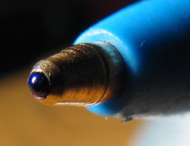

Pastapliiatsi patenteeris 1888. aastal ameeriklane John Loud (1844–1916). Tema eesmärk oli valmistada vahend, millega kirjutada sellistele karedatele pindadele nagu puidule või nahale. Selle eesmärgi ta täitis, kuid tema pliiats oli liiga kare, et sellega tähti kirjutada. Seetõttu ei hakatud tema pastapliiatsit tootma ja selle patent aegus lõpuks.

Kodulehele